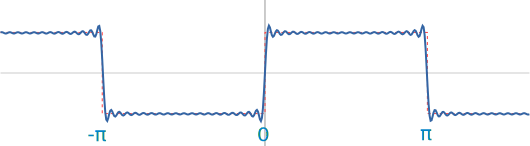

Fourier Series Grapher
Sine and cosine waves can make other functions! Here you can add up functions and see the resulting graph.
What is happening here?
We are seeing the effect of adding sine or cosine functions. Here we see that adding two different sine waves make a new wave:

When we add lots of them (using the sigma function Σ as a handy notation) we can get things like:

20 sine waves: sin(x)+sin(3x)/3+sin(5x)/5 + ... + sin(39x)/39: